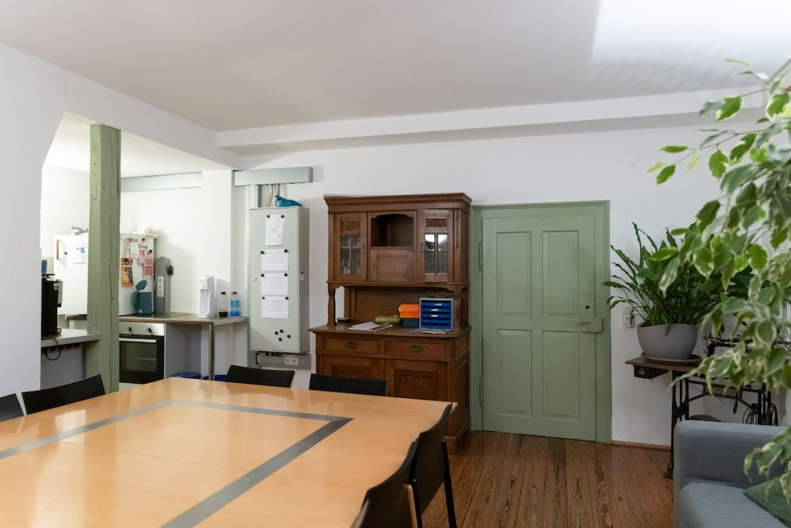
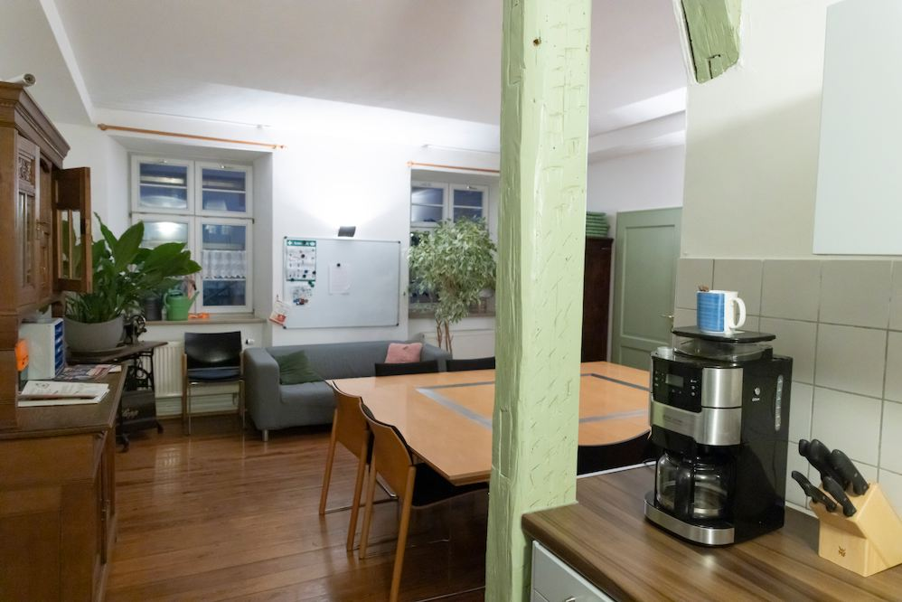

Cafeteria im Erdgeschoss
- Besonderheiten: eigenet sich u. a. für Workshops, z. B. auch zusammen mit Veranstaltungsraum Lonetal anmietbar
- Größe: ca. 38 m²
- Raumaustattung: Küche, Tisch und Stühle vorhanden (s. Bilder), Dielenboden, Internet- und Telefonanschluss
- Gemeinschafts- & Außenbereich: Rasenaußenfläche am Haus wird gepflegt, kann bei Bedarf ebenfalls genutzt werden, insgesamt zehn Parkplätze am Haus vorhanden, Winterdienst wird übernommen, weitere Parkmöglichkeiten in der Nähe
- Vermietung: flexibel (tage-, wochen-, monatsweise)
- Preis: auf Anfrage. Eine Orientierung bietet unsere Preisübersicht.
